{kind=link}
{kind=link}
{kind=link}
{kind=link}
{kind=link}
{kind=link}
{kind=link}
{kind=link}
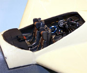
{kind=link}

You may click on the above images to view larger pictures.
Fliegerhorst 1/48 Resin Bv-215 Nachtjäger
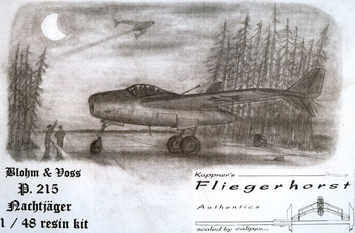
Kit #48002
MSRP $120.00
Images and text Copyright © 2004 by Matt Swan
Developmental Background
In January of 1944 the Technical Air Armaments board (Technische Luftrüstung) issued a specification for a definitive night fighter with a top speed of 559 mph and four hours of flight time. For this particular day and age these requirements were extreme to say the least. Dr. Richard Vogt was already developing the radically designed Bv-212 fighter/interceptor for the “Emergency Fighter Program” and immediately looked to this design to meet the requirements of the new specification.
The Bv-215 was essentially an enlarged Bv-212; it had slightly less wing sweep at 30 degrees compared to the 40-degree sweep on the 212 and a slight 6-degree dihedral with anhedral wingtip control surfaces. The 215 was designed around a tubular steel frame with a wet wing containing nearly 7800 liters of fuel. The fuel was fed through a spiral plumbing system wrapped around the engines intended to preheat the fuel before being introduced to the combustion chamber. The single rear mounted Heinkel He S 011 axial flow turbojet engine seen on the 212 was replaced with a pair of tandem mounted He S 011 engines fed through a nose intake. Warm air from the engine compartment was circulated through the wings leading edges to act as a deicing system.
The pressurized cockpit held a three-man crew; a pilot, radar operator and navigator/radio man, and all three were provided with ejection seats. Several different offensive weapons systems were designed to fit in the nose such as combinations of Mk 108 and Mk 213 30mm cannons or Mk 112 55mm cannons or internally stored R4M Rockets. Defensive armament consisted of a FHL 151 remote controlled rear-facing turret armed with either one or two MG 151/20 20mm cannons. Also housed internally were options for several different radar systems. This aircraft could use the FuG 244, 280 or 350 Search Radar, a Ground-to-Air Identification Friend or Foe (IFF) system as well as a Ground/Air Radio homing device and a bad weather radio landing aid. A review of all the proposed navigation and search electronics reads very similar to what would be expected in a contemporary jet fighter.
In the end none of this made it off the drawing board. At war’s end only three prototypes of the single engine Bv-212 were under fabrication and the Bv-215 was still a dream for the Luftwaffe.
The Kit
Before we get into the model lets take a look at Fliegerhorst and Eric Kappner. Fliegerhorst translates directly as ‘Air Base’, which seems an appropriate name for this model company. Eric Kappner is the driving force behind the model and the company. A pattern maker by profession and an avid aircraft modeler Eric has the good fortune to be able to combine his professional and leisure talents. Still somewhat new into the model production game, the Bv-215 is just his second production piece. Considering the skill and craftsmanship displayed on this model, I am looking forward to seeing his third (Bv-155) and forth ((Bv-208.3). There is even more good stuff to look forward to as the next planned release from Fliegerhorst Models will be the De Havilland Comet Mk-1 with decals!
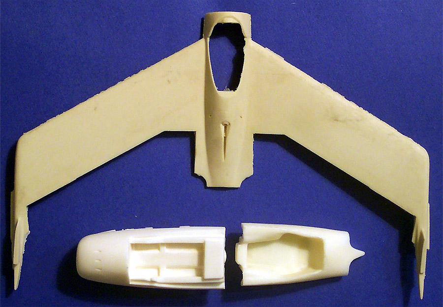
This kit arrives in a light duty cardboard box of apparent recycled material with a photocopied pen and ink drawing of a Bv-215 in a forest setting. The contents inside the box are well packaged with parts being grouped in small zip-lock bags and the entire contents layered with bubble wrap. Considering that this has been manufactured and packaged in Germany, shipped to the East Coast of the United States, uncrated then repacked for shipment to me here in Ohio I was pleased to see that no part of the kit suffered damage from transit. Also included in the box are a good quality printing of the instructions – all in German, and a flier from DMC Models, the U.S. distributor of the kits.
The first bag of parts I looked into contain all the flying control surfaces. Bags containing the landing gear and gear doors, the flaps, the cockpit and canopy follow this. In the bottom of the box rests the two solid cast fuselage sections and the single piece main wing. The flaps include pieces for flaps up or flaps down and neither these nor the pieces covering the flying control surfaces have any panel lines but are simply smooth cast and allow full range of positioning. All of these pieces as well as the main wing are cast with the leading edges up. The results of this is that we have very nice trailing edges with no bubbles the leading edge has the remains of the pore stubs and a small collection of bubbles that will have to be filled. The main wing has good dihedral, no obvious warpage and very lightly engraved panel lines but these seem to have been slightly obscured during the casting process due to a heavy coating of mold release agent. All of the panel lines will need to be rescribed and could be elaborated with a few additional lines. I don’t know what kind of mold release agent was used but even a good bath in warm soapy water did little or nothing to remove it. Ultimately, I removed it with a paper towel and small amounts of lighter fluid. Fortunately this is the only piece that suffers from the monster mold release.
The fuselage of the aircraft comes as a solid cast nose section with better engraved panel lines and no noticeable release agent. This piece encompasses the cockpit tub, nose gear bay, two detailed electronics bays and two of the three forward gun bays open and detailed. This piece was cast nose down and the resin quality around the deeply hollowed intake is excellent. This piece ends at the engine compartment with half of the rear gear bays and a large alignment stud. The rear section piece has a large area hollowed out which indicated to me there was a real attempt to keep the model from being a tail sitter. Exhaust cones are molded in for the S-011 engines and, like the wings, was cast with the tail down so the quality level is very good around them.
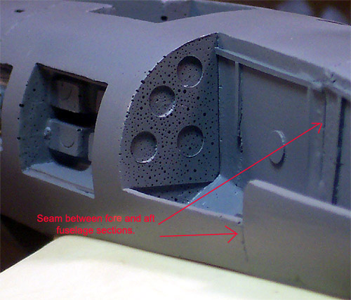
These two large pieces mate with very little work required and leaves a very fine seam. Unfortunately the front surfaces of the landing gear bays trapped lots of air bubbles that really are not visible until some primer hits them.
The landing gear are cast around heavy 412 wire that should support the model without difficulty. The resin struts and retraction arms display nice levels of detail but also have the worst flash of any of the parts in the kit. Even at it’s worst this flash will present little problem and cleans off easily. All three of the wheels managed to collect air bubbles so some fill work is required here. The gear doors all look good and have some descent interior detail.
The last bag holds am unusual item of interest. Before we get to that, lets talk about the other pieces here for the cockpit. The ejection seats are well done but have no seat belts. The radio operator’s seat looks good and has no seatbelt detail either. This is probably a good thing because with a kit like this you’d probably want to add some scratch built or PE belts anyway. The hooded dash and the radio bay are adequately detailed and don’t seem to have any bubble damage. Included in this bag are two vacuform canopies featuring soft frame lines and mediocre clarity, a coat of Future will probably help on that score. What so interesting in this bag though is the master for the canopy. I see two possible uses for this piece; I could use it to attempt to vacuform a better-defined canopy or use it as a master for cutting paint masks or both. There are plenty of fine air bubbles in the master but this shouldn’t present any problems in using the part.
The main parts of the kit seem to fit well together other than the parts for the flaps in the up position. It looks like some shims may be needed for that option. All together the kit contains forty-four parts cast in light tan or nearly white resin including the wire reinforced struts, 2 vacuform canopies and a single canopy master for 47 total pieces in the box.
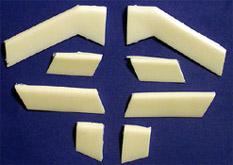
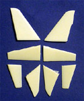
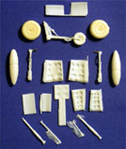
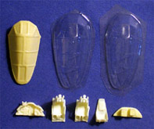
The pictures above show the parts as they are grouped in their bags and can be clicked on to view larger images.
Decals and Instructions
The decals are easy in this kit – there are none. This leaves you with wide-open options to raid the spares box, buy aftermarket Night Fighter sets and adapt them to the kit or paint your own.
The instructions begin with a full page of information on the aircraft along with some general painting guidelines but this is all in German only. Following this are three pages containing exploded view assembly instructions. The instructions indicate the front fuselage section as being of three pieces with a vacant bay for the top front machine guns and an air inlet canal that travels through the entire front section. I can only imagine that this may have caused the model to be a tail sitter and casting it as a single piece may have resolved the issue – that’s only a guess mind you. These exploded views cover all the basic pieces included with the kit. There are no specific color codes or call-out for the interior details. There are also no suggestions for potential aircraft markings.
Conclusions
A few things are lacking in the interior detail department here. It is up to the modeler to scratch or scrounge things like the control column, rudder pedals, small control levers and any other details needed to complete the front office. The general fit of the parts is good and other than the air bubble issue the parts are of good quality. The lack of decals is nothing more than an inconvenience and maybe even a blessing prompting the modeler to exert his or her creativity. A few recesses in the interior pieces contained small bits of the molds making me wonder just how many units can be produced before a mold reaches the end of it’s usefulness. With nothing else to compare to, this may just look like another version of the Bv-212 that has been on the market for a few years now but it definitely is something different. The picture below shows the main wing and fuselage parts of the Bv-215 next to an FM 1/48 Bv-212. That’s what I call a ‘Big Brother’.
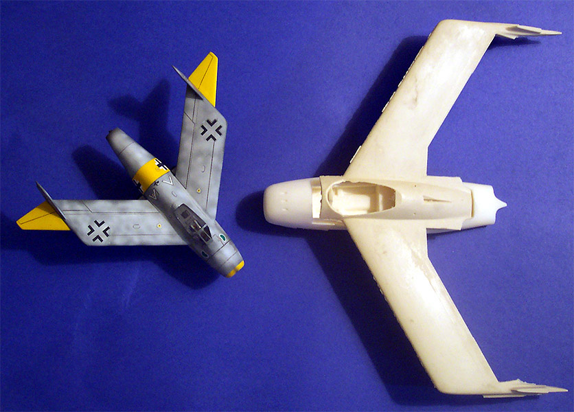
This is the only kit of this aircraft available in 1/48 scale and, while pricey and requiring a good level of skill, will make an exceptional addition to any collection. One final note, Mr. Kappner informs me that the mold release agent issue on the wings has been resolved on future castings. Review kit compliments of my pocket.
Construction
12/26/04
Construction begins with the two large fuselage sections. There is a tremendous casting booger in the forward half alignment hole that is removed with a cylinder burr bit on my Dremel. The inner surfaces of both pieces are sanded and joined with a goodly amount of five-minute epoxy. After holding the two pieces together in the correct position for five minutes they are set aside to fully cure overnight. The next day I cleaned up the seam, most of the work was inside the landing gear bays removing excess epoxy. As I stated in the initial review, all the panel lines are very soft so now seems as good a time as any to rescribe them. This was done using the methods described in my article, A Systematic Approach to Scribing. The fuselage core is cleaned and gets a coat of primer. All sorts of micro-bubbles make their presence now at this time.
Larger bubbles are opened up with the tip of my razor knife and filled with super-glue then sanded smooth. The smaller bubbles are filled with thickened paint applied with a dental trowel then sanded smooth.
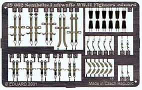
This sounds easy enough but took all day. Between paint applications and sanding I also cleaned up the leading edge of the wing and filled a lot of micro bubbles there as well. The seats were attached to toothpicks and base-coated with RLM 66. I added Eduard pre-colored Luftwaffe fighter seatbelts to dress them up a bit. I really like these belts as they have excellent detail and add some real depth to the seats. Moving into the cockpit area, I salvaged some spare rudder pedals from another Luftwaffe build, added some foil bootstraps to them and attached them to some magnet wire for the pilot. A spare control stick from a Me-109 donated its grip and a new column was built from Evergreen sprue. I always save my old PE sheets and today that paid off, I found four small control levers among the scrap sheets and these became throttle and flap levers for the pilot.
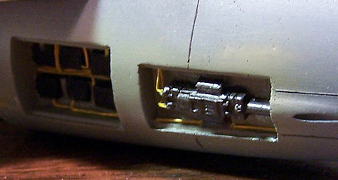
I broke away from the cockpit at this point. I wanted to have some time to think about my plans to build the additional details that would be needed here and moved to the electronics bays and gun bays. After basic painting was done here, RLM 02 interiors with black boxes and gunmetal machine gun breeches, I prepared to lay wire harnesses. I took apart an old USB cable from one of my computers and salvaged the hair fine wires inside. Taking four to five wires at a time I twisted them together and painted them yellow. Once dry these were cut to length and installed into the bays with fine spots of super-glue. There’s still plenty to be done in these bays but the groundwork is now laid.
I’ve had a few days to think about the cockpit and have been digging through my spare parts boxes looking for interesting tidbits that might be useful. I’ve lined up a lot of odd stuff and have prepared several lengths of wire like in the electronics bays, some painted yellow and some painted light gray. First the seats get superglued in place, a little judicious sanding was required to get a good fit but no major difficulties here. Next I place various pieces in the pit to see how well they blend together. After I have finalized my selection of odd stuff it’s all removed from the pit and I start laying some wire in place. I’m using light gray cables on areas that will easily be seen and yellow cables in less visible spots. Initially I used small strips of masking tape for hold down straps but found it was much easier and better looking to simply paint them with some Gunze-Sangyo Burnt Iron. The other equipment was painted and set aside to dry. This stuff was then installed and few pieces of fine silver solder were worked into the pit as well. I built a rear cannon control from a rudder pedal assembly taken from a He-111, a reflector gunsight will be added to this later on. Here are some shots of the work in progress; the first picture is with the base material the kit provides along with my rudder pedals, throttle levers and stick. All the rest are after being dressed up a little.
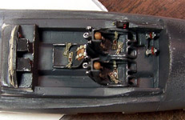
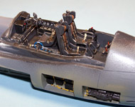
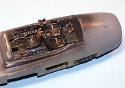
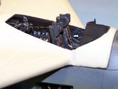
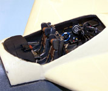
You may click on the above images to view larger pictures.
Well, that certainly left me with a feeling of accomplishment. Next I’ll attach the main wing, this had to have both the front and back sides sanded several times before a snug fit was achieved then it was secured with a heavy bead of gap filling superglue. The seams were sanded smooth and a few small gaps on the lower wing joint were filled and sanded. It’s time to look at the fins; there is most definitely a left and right set of fins for this. After cleaning up the pour stumps and dry fitting them I find a gap on the right side fins that will need filling.
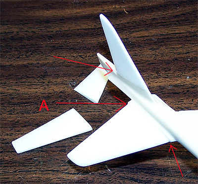
Note the red arrows in the picture at the right; arrow A indicates one of the larger problems. This area will get a facing of thin polystyrene sheet to bring it back to the correct size and so will the upper fin. The left side fins do not have as serious a problem and can be corrected with just a little sanding.
In order to assure that the fins on both sides have the same angle I place the model on a stand made from bottles of paint and measure the gap from the wingtips to the work surface making sure it is the same on both sides. Now the fins are installed and the tip to table surface gap is measured on them as well. The flight control surfaces are mounted next with a right turn indicated. All of these pieces are being attached with gap filling super-glue and accelerator.
So far, so good. Now I’ll move on to the inner flight control surfaces and flaps. The kit provides two choices on the flaps, a set of raised flaps or a set of dropped flaps – I will be installing the flaps in the down position. I measure approximately a 30-degree drop and install the inner flap sections first. Next the outer flaps are glued in place then the inner flight control surfaces are placed with attention paid to the positioning of the fin control surfaces – these should match. Okay, now all I’ve got to do is go over these seams with some fine sandpaper and make sure everything is clean and smooth, you never know where some wayward spot of super-glue may end up.
Here are a couple of progress pictures. This first shot is with the model on the paint jar stands right after the fins have been installed. The wing joint has been blended in and the pilot figure is to give some reference of the aircraft size. There are still a few micro bubbles and blemishes to be fixed around the leading edges of the wing but she is starting to take shape.
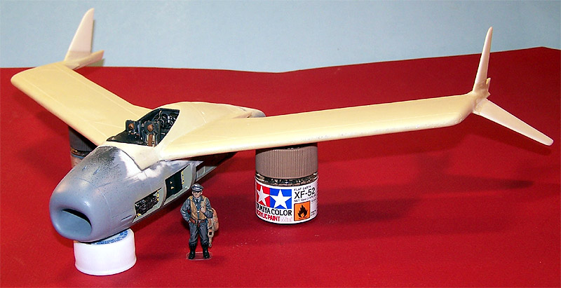
This next shot is with the flight control surfaces and flaps in place. Even with all this wing surface hanging out back the model does not appear to be a tail sitter.
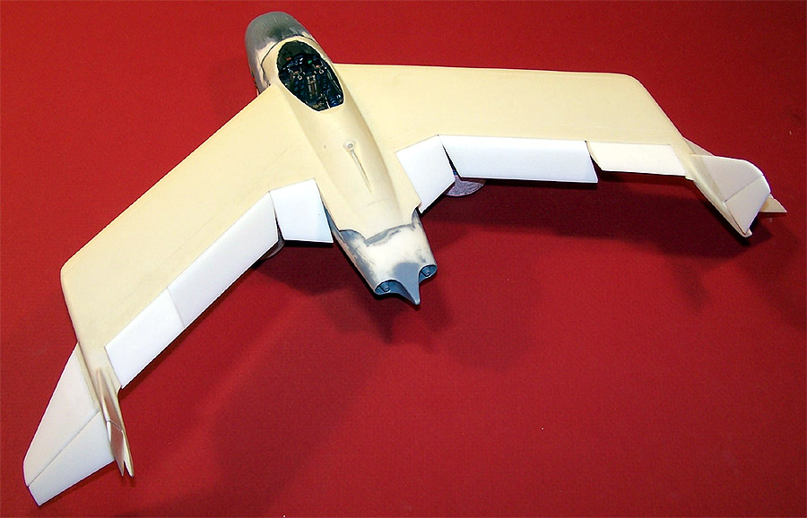
1/9/05
I think it’s time to start working on some legs for this bird. As I mentioned earlier in the kit review section, this model features heavy (412) wire cast into the landing gear. This has been done very well and only minor trim work is needed on the basic strut. I’m adding brake lines to all three struts using a medium magnet wire and hold down straps fashioned from foil salvaged from a wine bottle. For general painting the main strut and wheel are RLM 02, the tire is my own Tire Black mixed from Testors Flat Black and a small amount of White, the oleo is Silver, the brake lines are Brown and the tie down straps are Burnt Iron. Dry brushing with Model Master Steel follows this. Once painted and dry the entire assembly gets a basic sludge wash (see The Basics of Weathering).
Not only are the gear legs designed to support the weight of this model but the attachment method is equally as strong. The front gear incorporates a large base that fits securely into the slot of the front bay and each of the rear struts have large shaped studs that fit to corresponding holes. Not only does this hold the struts in the correct position, it allows for the model to immediately be placed on its feet.
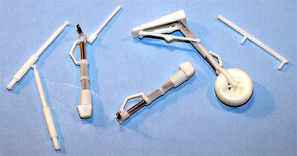 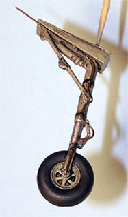
Before I put the gear in place I want to do some dress-up work inside the main gear bays. Using the same technique as in the gun and electronics bays, I bundle fine wire, paint it yellow and place a long umbilical running through the main bays.
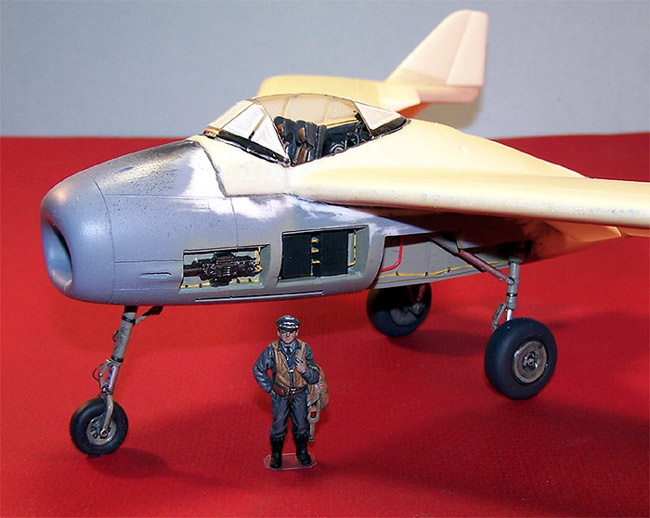
I also fashion a large cable from small red wire and insert that into both bays, what does this represent? Your guess is as good as mine – it just looks cool. Now the struts are super-glued in place and the model is placed on its feet. Right at this point I am holding my breath, praying that it does not flop back onto its tail. I let go of the wing tips and the nose gear stays firmly planted on the ground, whew … I can breath again.
All right, it’s time to start working on the canopy. First the clear lenses are placed for both front and rear gunsights. The rear sight is made from an old Me-109 reflector site and the front one is manufactured from some clear flat card. The first thing that needs to be done with the canopy is to remove it from the master sheet of plastic. I follow the lowest frame line with my Dremel only to find this has cut the canopy too short to fit. Thankfully we have a spare. The second canopy is cut with a large margin for error and then carefully trimmed to fit using the flat edge of a cut-off wheel mounted in the Dremel at its lowest speed. Once a good fit has been achieved I look at opening the crew door. I still have the first canopy sitting in the wings in case it’s needed. Using a large leaf blade (that’s with a curved edge) and working from the interior of the canopy I press the blade into the seam of the frame and gently rock it back and forth. This easily cuts through the plastic. Carefully moving down the seam the crew door is removed without damage and the first canopy can go into the spares box.
Both the main canopy and the crew door are dipped in Future, allowed to cure then masked with strips of masking tape before being attached to the model with Testors Clear Parts Cement. The crew door is not attached quite yet – that’ll be the very last piece to go on the model.
In preparation for the paint room all the struts are wrapped with tissue paper, the bays are all packed and the crew access is filled with tissue also. A little water helps to form the tissue and secure it so the airflow from the airbrush does not dislodge it. I have spent some time considering various camouflage schemes and finally settled on something unique. I mention this now because it influences my choice of primer. Rather than use my standard Model Master Primer Gray I am using Model Master Medium Gray cut with lacquer thinner. This reveals several problems on the model, most of which are focused around the leading edges of the wings. There are several micro bubbles that I had missed and the seam around the canopy needs some work as well. Some super-glue is skinned over the wing edges and sanded smooth before another coat of primer goes on. That last round of sanding opened yet more micro bubbles so another coat of super-glue and more sanding followed by another coat of primer. This time I have an acceptable surface to continue.
During the last break I ran to the local Arts and Crafts store to get several boxes of Stick-To-It. You may be more familiar with this under the Blue Tac name. Simply put, it’s poster adhesive. Rolling this material out into thin rolls I spend most of a Saturday morning laying this on in a tortoise shell pattern over the Medium Gray primer. Once this pattern is complete and the adhesive has been gently pressed down to assure a good contact I am off to the paint room once again. This time I am using Model Master acrylic RLM 63 light gray and coat the entire aircraft, top and bottom. A short dry time is allowed and a second coat goes on. Another short dry time and the adhesive is removed. I don’t throw this stuff away – it can be reused many, many times before its life is over.
A little touch up is required with the medium gray. With some paint thinned out and my air pressure down to 5psi and working at point blank range the pattern is cleaned up. Most of the tissue packing can be removed now, only that in the canopy is left behind.
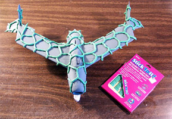
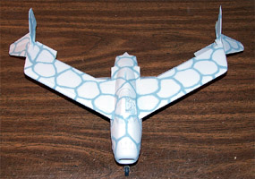
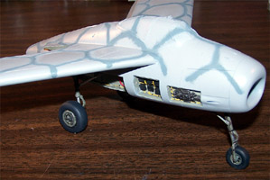
You may click on the images above to view larger pictures
The RLM 02 is touched up around the gear bays and all the equipment access doors are glued in place. The kit does not come with any door retraction struts so these are fashioned from various sizes of round stock rod or salvaged from the spares box. Braces for the gun bay and electronics bay doors are made from medium magnet wire and painted wood brown. The aft cannon is attached and the model is ready for its first coat of Future.
1/30/05
While the first coat of Future was curing I spent some time digging around in the spare decals box. I was looking not only for national markings but also for various Luftwaffe warning stencils and service stencils. Since the decals were from various sources and of varying ages application was an adventure; some did not want to lift from the sheet while others simply laughed at initial applications of setting solutions but eventually all decals were down and sealed with another coat of Future.
While this coat of Future cured I worked on the main access door. I fashioned a grab handle from fine magnet wire, made a door brace from heavier wire and some door hinges from medium magnet wire wrapped around the shaft of a dental pick. All these little do-dads were attached with spots of super-glue and accelerator and my attention was returned to the main model. I had to fashion a lower antenna from some thin flat Evergreen stock and a short piece of fine magnet wire and then attach it to the belly of the craft. The pitot tube was made from some stretched sprue and attached with some super-glue into a hole drilled with a fine welding bit. Panel lines were accented with a basic sludge wash and gun blast stains were made from Tamiya X-19 applied at low pressure and close range. All this was sealed with some Polly Scale clear flat then some ground pastel chalks were brushed on to help the gun blast stains. The final masks were removed and the crew door was attached. Ultimately I will build a winter diorama base for final display but for now you can see how she looks on a grassy field.
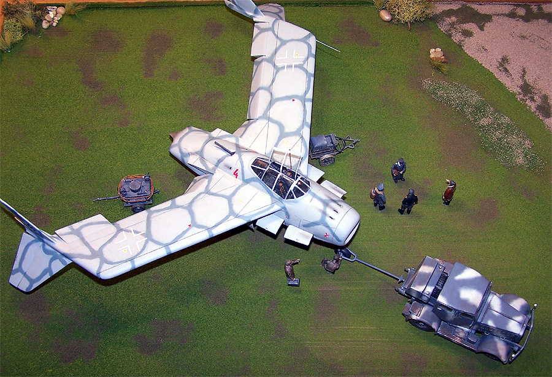
Figures are from various sources such as Preiser, Monogram and Hasegawa. The fueling cart and starting cart are from Verlinden while the Hanomag Tractor is from Matador Models.
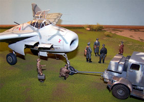
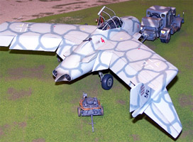
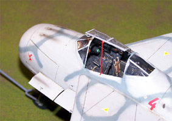
You may click on these small images to view larger pictures
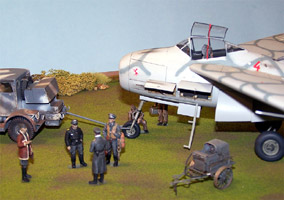
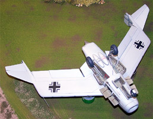
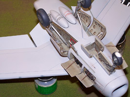
This has been a very interesting kit to build, the parts fit together fairly well and the level of engineering was good. Eric Kappner has been developing the kit even further since this project began; the wingtips have been reengineered as a single piece that gets glued to the end of the wing to make that part of the assembly easier and the initial issues with excess mold release agent have been resolved. Probably the most challenging aspect of this kit is not the resin assembly but the scratch building of finer details and the hunt for adequate decals. The most important requirement before starting this kit is to have a well stocked spares box and an active imagination.


{kind=link}
{kind=link}
{kind=link}
{kind=link}
{kind=link}
{kind=link}
{kind=link}
{kind=link}
{kind=link}